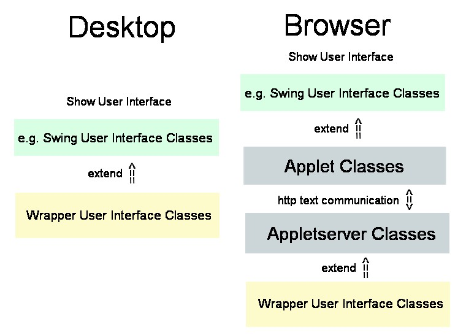
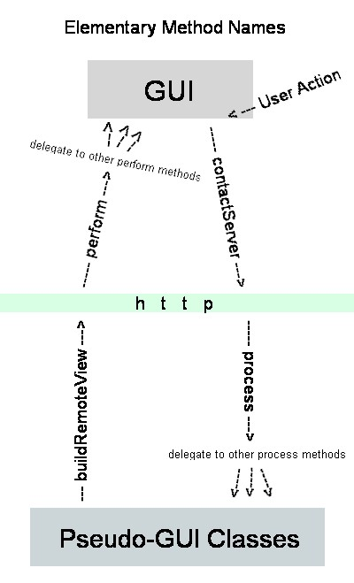

We want to develop applications in the same way as if they were desktop
applications. Therefore, Appletserver Classes provide simular
interfaces as Cameleon user interface classes. The rest ist done by the
framework.

Let's have a short spy how the Cameleon framework does the job!

Perform Samples:
GUI element creation
GUI value update
client printing
Actions on Server:
DB update
HTLM reporting (automatically opened in browser)
For the moment, no further documentation is available. Please contact us for sample implementation assistance to get started.